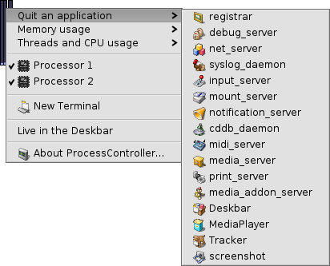
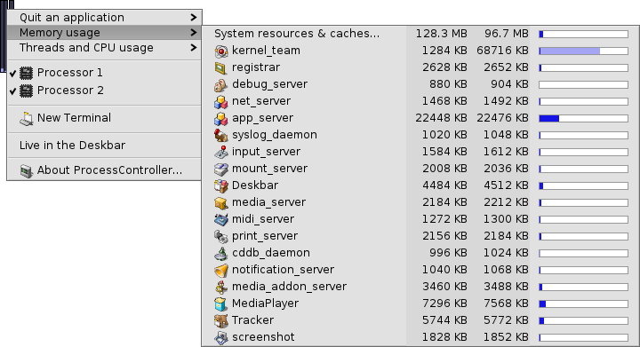

Français
Français Català
Català Deutsch
Deutsch English
English Español
Español Italiano
Italiano Magyar
Magyar Polski
Polski Português
Português Português (Brazil)
Português (Brazil) Română
Română Slovenčina
Slovenčina Suomi
Suomi Svenska
Svenska 中文 ［中文］
中文 ［中文］ Русский
Русский Українська
Українська 日本語
日本語 ProcessController
ProcessController
| Deskbar : | ||
| Localisation : | /boot/system/apps/ProcessController | |
| Réglages : | aucun |
 La principale fonction de ProcessController est de visualiser l'activité processeur et la quantité de mémoire utilisée. Il permet de suivre des différents processus, de changer leurs priorités, et de les tuer en cas de blocage. Dans les environnements multiprocesseurs, il vous permet de désactiver les différents processeurs/cœurs. Lorsque le Tracker ou la Deskbar plantent, vous pouvez les redémarrer à partir du menu de ProcessController.
La principale fonction de ProcessController est de visualiser l'activité processeur et la quantité de mémoire utilisée. Il permet de suivre des différents processus, de changer leurs priorités, et de les tuer en cas de blocage. Dans les environnements multiprocesseurs, il vous permet de désactiver les différents processeurs/cœurs. Lorsque le Tracker ou la Deskbar plantent, vous pouvez les redémarrer à partir du menu de ProcessController.
Les indicateurs de gauche montrent l'activité de chaque processeur, alors que la jauge de droite montre la consommation mémoire. Souvenez vous que le nombre d'indicateurs dépend du nombre de processeur/cœurs de l'ordinateur.
A moins d'être déjà en cours d'exécution, ProcessController demandera à son lancement si il doit s'ouvrir en mode fenêtre ou si il doit s'insérer dans le cartouche de la Desbar.
En mode fenêtre, vous pouvez redimensionner l'icône en retaillant la fenêtre, et faire glisser la poignée du Replicant vers le bureau.
Partout où il est installé, vous pouvez agir sur ProcessController par l'intermédiaire d'un clic droit qui ouvrira un menu contextuel.
Pour supprimer l'appliquette du cartouche, décocher dans le menu contextuel.
Quitter une application (Quit an application)
Pour quitter une application il suffit de choisir son nom dans le menu . C'est une méthode propre pour fermer un application, tout comme de cliquer sur son bouton de fermeture. Cependant, veillez à ne pas arrêter les processus du système comme les serveurs ou des démons, au risque d'altérer le bon fonctionnement de votre système.
Consommation mémoire (Memory usage)
Le suivit de la consommation de mémoire peut être assez imprécis.
Ce menu vous permet de surveiller l'utilisation de la mémoire par les différents processus de votre système. À côté du nom du processus, vous trouverez deux colonnes : la première correspond à la quantité de mémoire réservée pour l'écriture, tandis que la seconde montre toute la mémoire, y compris l'espace en lecture seule (comme par exemple les bibliothèques partagées).
La première ligne System resources & caches… montre la quantité totale de mémoire utilisée par le système et toutes les applications. La largeur de la jauge bleue est basée sur la mémoire physique totale de votre ordinateur. Les lignes suivantes montrent la mémoire consommée par chaque processus. Veuillez noter que la largeur de la jauge est calculée à partir de la quantité de mémoire utilisée.
| La mémoire utilisée exclusivement par l'application (avec un accès en écriture) | ||
| Mémoire incluant l'espace en lecture seule (peut être partagée avec d'autres applications) |
Tâche et charge du processeur (Threads and CPU usage)
Ce menu vous permet de modifier les priorités des tâches, de tuer les processus ou les déboguer.

| Code noyau | ||
| Code utilisateur | ||
| Tâche oisive |
Au premier niveau vous voyez des noms des processus. En cliquant sur l'un d'eux, vous pouvez tuer tout le processus. La partie bleue foncée de la jauge correspond au temps passé dans le code du noyau, la partie bleue claire à celui passé dans le code utilisateur, la partie verte dans la tâche oisive. Une jauge entièrement rempli de bleu signifie que le processus monopolise toute la puissance de traitement du système.
Le deuxième niveau montre le détail des tâches d'un processus. En cliquant sur l'une d'elle, vous pouvez la déboguer ou la tuer. Une jauge entièrement remplie de bleu signifie que la tâche monopolise une unité de traitement (processeur/cœur).
Le dernier niveau du menu vous permet de changer la priorité d'une tâche. Soyez prudent avec ça ! En règle générale, la priorité d'une tâche devrait être inversement proportionnelle à l'utilisation qu'elle fait du processeur. plus elle tente de réclamer du temps CPU, plus sa priorité devrait être faible. En général, ne vous embrouillez pas avec les priorités des applications. Contactez son auteur, c'est son boulot.